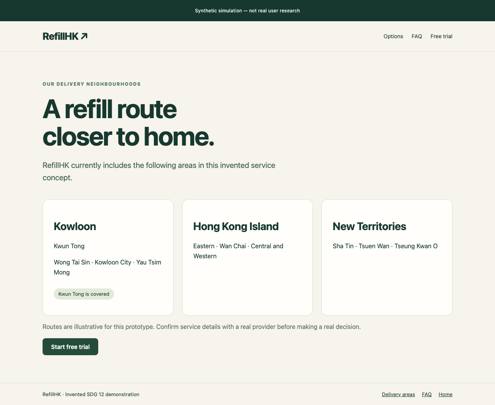
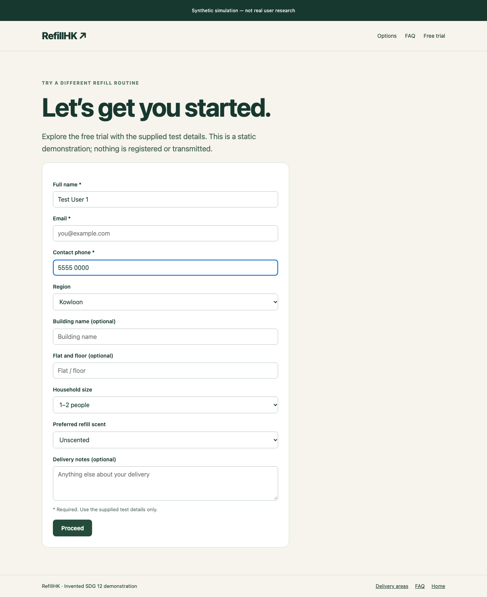

T1failed
Find the monthly price of the Basic plan
step limit reached
15 recorded steps · Success check: text_visible:HK$268 per month
Define a product, an audience and tasks. Inspect what a synthetic agent actually attempted, then use the feedback to plan research with real people.
The browser evidence is from 17 October. DeepSeek reviewed that evidence on 18 October, including transcriptions of saved screenshots. It did not visit the product again.
Requested: 1 · Completed: 1 · Failed users: 0 · Cancelled users: 0. A completed evaluation means results and feedback were saved; it does not mean every task succeeded.
step limit reached
15 recorded steps · Success check: text_visible:HK$268 per month
success check passed
1 recorded steps · Success check: text_visible:Kwun Tong
step limit reached
15 recorded steps · Success check: url_contains:/welcome.html
Source: run-20261017-195303-6987 · Persona: run-20261017-195303-6987-u00001. All benchmark profile traits are authored assumptions, not population facts.
Actual supplied feedback from DeepSeek / deepseek-flash. One individual response; no population shares.
Appeal is mixed: reusable cleaning-product refills match a household use case, and the pages reachable in the traces cover delivery coverage and a signup form with household-relevant fields, but little product or brand detail was visible. Usefulness is mixed: the Kwun Tong delivery check succeeded (T2 completed), and the signup form covers region, building, household size and preferred refill scent, but the Basic plan monthly price was never found (T1 failed at the step limit) and the free-trial path did not reach the welcome page (T3 failed at the step limit). Ease of use is low: T1 looped on the Delivery areas page with no price evidence until the step limit, and T3 repeated typing into the contact-phone field with the Email field still recorded empty at the final observed step, so the flow was not completed within the trace. Trust is low: the reviewed material explicitly describes an invented service concept and a static demonstration that registers nothing, and no literal price evidence was supplied anywhere in the traces. Intention to use is low: the refill concept is relevant, but with moderate price sensitivity the missing plan pricing and the uncompleted trial path limit hypothetical interest in trying it.
The original database evaluation, task outcomes and IDs remain unchanged. The new feedback is a separate saved review.
A fresh authored persona reviewed supplied concept material. This is a separate example with a different mode and configuration; it is not an A/B comparison.
Requested: 1 · Completed: 1 · Failed users: 0 · Cancelled users: 0. Ease of use is not assessable in concept mode.
concept evaluation: no product interaction
0 recorded steps · Success check: text_visible:HK$268 per month
concept evaluation: no product interaction
0 recorded steps · Success check: text_visible:Kwun Tong
concept evaluation: no product interaction
0 recorded steps · Success check: url_contains:/welcome.html
Appeal (4): the reusable-bottle monthly cleaning-refill model lines up with the persona's interest in cutting household packaging without adding chore friction, and the page-level framing is easy to grasp; the recurring monthly cost tempers rather than kills the appeal for a high-price-sensitivity household. Usefulness (4): the Basic plan supplies three refills (laundry, dish, multi-surface), reusable bottles and a scheduled monthly delivery, and the delivery page names Kwun Tong explicitly, which matches the persona's district and routine. Ease of use: not assessable — this is a concept review; T1 (find Basic price), T2 (Kwun Tong coverage) and T3 (start free trial) are all recorded as not_attempted, so no interaction evidence exists. Trust (3): the material is candid that it is an invented static prototype, takes no payment or registration, and makes no verified environmental impact claims, which supports credibility of the evidence itself, but nothing substantiates real service reliability, bottle-collection logistics or measured impact. Intention to use (3): hypothetical trial interest is mixed — the routine and district fit are relevant, but the recurring HK$268 outlay and the unproven practical value of the refill cycle would need clarifying before interest is more than exploratory.
Concept run: run-20261018-010810-d087. The service, delivery areas, plans and environmental positioning are invented prototype material.
These images were saved by the original run on 17 October. Click an image to open the original-size copy.

